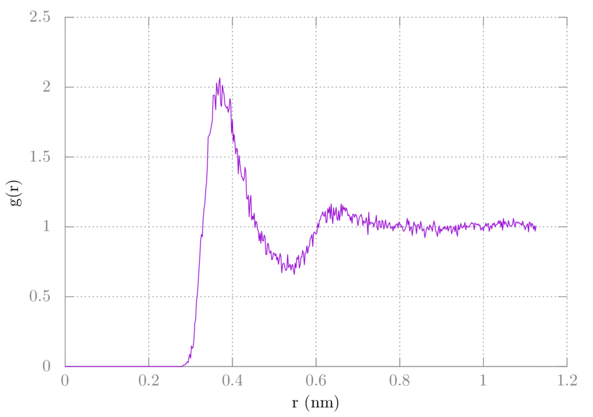

GROMACS Tutorial 2 -- One Methane in Water
In this tutorial I'll show you how to create a system containing one OPLS methane in a box of TIP4PEW water.
Setup
As before, we need a structure file, a topology file, and parameter files. We're going to use the GROMACS tool gmx pdb2gmx to generate the topology from a pdb file.
Setup residues for pdb2gmx
For this molecule we'll be using the OPLS force field. The force field is
located in the top-level force field directory (probably /usr/share/gromacs/top
or something similar).
If you're unsure where your GROMACS installation is do:
$ echo $GMXPREFIX
If you are properly sourcing the GROMACS configuration file, this will give you
the installation location. Look for the directory share/gromacs/top in that directory and go
into it (e.g., if GMXPREFIX is /usr then go to /usr/share/gromacs/top). Or
you can simply go to $GMXDATA/top.
Let's take a look at the force field directory's its contents:
$ cd oplsaa.ff
$ ls
You'll see several files, but we're only interested in a few of them for now.
Notice forcefield.itp. This is the main file used in simulations. Inside
you'll see a [ defaults ] section as well as the inclusion of two other files -
one for bonded interactions and one for non-bonded interactions. We're also
interested in atomtypes.atp which gives the descriptions for the cryptic
opls_#### terms as well as the aminoacids.rtp which give a list of
recognized residues used for the gmx pdb2gmx command.
Open atomtypes.atp with your text editor. The following opens it with vim:
$ vim atomtypes.atp
Go to the line with opls_138. Notice the comment says alkane CH4, so we are
on the right track here for our methane. However, notice the mass in the second
column -- this is only the carbon for a CH4 group, so we also need the
hydrogens. This is an "all atom" model -- every atom is represented. The
corresponding hydrogen is opls_140. You'll probably also want to look at the
supporting info of the OPLS force field
paper.
The parameters in the paper should match up with the parameters that we'll look
at in a minute. Now make a note of these two atom types and close the file.
Let's take a look at ffnonbonded.itp for these two atom types:
$ grep opls_138 ffnonbonded.itp
$ grep opls_140 ffnonbonded.itp
Here we see the name of the atom type, the bond type, the mass, the charge,
ptype, sigma, and epsilon. Make a note of the charge for each one -- we'll need
it for our new residue. As a side note, ffbonded.itp will use the bond type
for the bond types, angle types, and dihedral types.
Before continuing, you may want to copy your top-level force field directory directory somewhere, like your home directory, since we'll be modifying it and adding some files. To copy it to your home directory do
$ cp -r $GMXDATA/top $HOME/GMXLIB
You might have to be root to do it. Now change the $GMXLIB environmental variable to:
$ export GMXLIB=$HOME/GMXLIB
Add the above to your .bash_profile to make it permanent. Now do:
$ cd $GMXLIB
You are now in the copy of the director you made, and all simulations will use that directory instead of the one provided in the GROMACS default directory.
Now go into oplsaa.ff and open aminoacids.rtp. You'll notice several
residues already in the file. We're going to add a new file called
methane.rtp for our methane with a residue that we'll call CH4. Close
aminoacids.rtp. We'll need to tell gmx pdb2gmx the atoms and bonds in the atom in
our residue file. We could also tell it the angles, but we'll leave them out,
since gmx pdb2gmx will figure it out for us. You should create with the
following contents and save as methane.rtp in the oplsaa.ff directory:
[ bondedtypes ]
; bonds angles dihedrals impropers all_dihedrals nrexcl HH14 RemoveDih
1 1 3 1 1 3 1 0
; Methane
[ CH4 ]
[ atoms ]
C opls_138 -0.240 1
H1 opls_140 0.060 1
H2 opls_140 0.060 1
H3 opls_140 0.060 1
H4 opls_140 0.060 1
[ bonds ]
C H1
C H2
C H3
C H4
A few notes on the above file: the [ bondedtypes ] comes from
aminoacids.rtp and is required. Under [ atoms ] you can name them anything
you want, as long as they match the pdb file we are going to create later.
Notice in the first column we gave the atom names, then we gave the atom types,
the charges, and then the charge group. Under [ bonds ] we just tell it how
each atom is connected to the others. In this case, C has a connection to each
hydrogen. We could optionally add [ angles ], but as stated earlier, GROMACS
will sort this out for us. Now close the file. See section 5.6 for more
information about this.
Create pdb file and run gmx pdb2gmx
Now we are ready to create the pdb file. There are several programs out there
to create molecule structure files.
Avogadro is one of those. An alternative to
this is to use "xleap" from the AmberTools
package. In Avogadro simply click any spot in the window and you'll get a
methane. Save this file as methane.pdb. Your file should look something like
this. Save this somewhere in your home directory but not anywhere in $GMXLIB.
Change LIG to CH4 everywhere in methane.pdb. Also change the first H to
H1, the second to H2 and so on. PDB files are fixed format, so keep the
beginning of each column in the same place. The CONNECT and MASTER records also
will not be needed, so they can be removed. Also go ahead and change UNNAMED
to METHANE. Your modified file should look something like this:
COMPND METHANE
AUTHOR GENERATED BY OPEN BABEL 2.3.2
HETATM 1 C CH4 1 -0.370 0.900 0.000 1.00 0.00 C
HETATM 2 H1 CH4 1 0.700 0.900 0.000 1.00 0.00 H
HETATM 3 H2 CH4 1 -0.727 0.122 0.643 1.00 0.00 H
HETATM 4 H3 CH4 1 -0.727 0.731 -0.995 1.00 0.00 H
HETATM 5 H4 CH4 1 -0.727 1.845 0.351 1.00 0.00 H
END
Save the file as methane.pdb.
Now we can use gmx pdb2gmx to create GROMACS .conf and .top files:
$ gmx pdb2gmx -f methane.pdb
You'll be prompted to choose a force field. Choose OPLS. If you have an option
between two different force field directories, choose the OPLS that is in the
copied directory you made. For the water model choose TIP4PEW. If you get an
error that GROMACS cannot find residue CH4 you may beusing the wrong force
field.
Three files will be created: conf.gro, posre.itp,
and topol.top. conf.gro is our file containing just one methane, topol.top
is the system's topology file, and posre.itp is the optional position restraint
file for our solute (methane). We won't be using that one. In the topol.top
file notice that there is an [ angles ] section as promised. You'll also want
to rename the compound in topol.top. Take a look and explore each file.
Chapter 5 of the GROMACS manual will help you understand the topology file more.
Note
Files topol.top and methane.pdb will be used again in other tutorials.
For those who use gmx pdb2gmx to generate topologies for large proteins, things can get more complicated. This is merely a simple example, and really we probably could have found this topology somewhere else.
Solvate system
Our structure file and topology file only have our methane thus far. We need to add waters by using gmx solvate:
$ gmx solvate -cp conf.gro -o conf.gro -cs tip4p -p topol.top -box 2.3 2.3 2.3
Parameter files
We'll be using the same files from the previous tutorial.
Simulation
We'll be using the same sequence as last time. This assumes your mdp files are
in a directory named mdp:
$ gmx grompp -f mdp/min.mdp -o min -pp min -po min
$ gmx mdrun -deffnm min
$ gmx grompp -f mdp/min2.mdp -o min2 -pp min2 -po min2 -c min -t min
$ gmx mdrun -deffnm min2
$ gmx grompp -f mdp/eql.mdp -o eql -pp eql -po eql -c min2 -t min2
$ gmx mdrun -deffnm eql
$ gmx grompp -f mdp/eql2.mdp -o eql2 -pp eql2 -po eql2 -c eql -t eql
$ gmx mdrun -deffnm eql2
$ gmx grompp -f mdp/prd.mdp -o prd -pp prd -po prd -c eql2 -t eql2
$ gmx mdrun -deffnm prd
Tip
You may want to put the above commands in a bash script called run. Add
the following lines to the top of the script:
#!/bin/bash
set -e
Then do:
$ chmod +x run
To run the script do:
$ ./run
Your script should look like this. set -e tells bash to stop the script
if there is an error.
Analysis
Let's calculate something called the radial distribution function. First, we need to create an index file:
$ gmx make_ndx -f conf.gro
> a C
> a OW
> q
Now run gmx rdf:
$ gmx rdf -f prd.xtc -n index.ndx
At the prompt select C for the reference group. Then select OW. Then type
CTRL-D to end. A plot of the result, found in columns 1 and 3 of the data would be plotted by doing the following in gnuplot:
> plot 'rdf.xvg' u 1:3 w l
It should look something like this:

Summary
In this tutorial we learned how to create a residue template file (.rtp) for use with gmx pdb2gmx. We created a structure for OPLS methane and the generated a topology for it. From there we put water around it using gmx solvated. After this we ran a simulation, just like last time. Lastly, we found the C-OW radial distribution function using gmx rdf.